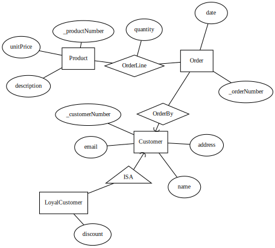

Databases (TDA357/DIT621)
Remote Exam on 8 June 2020 at 14:00-18:00
Suggested solutions
…
1 Entity-Relationship Modelling (10p)
1.1 E-R diagram (6p)

The diagram above was created with Query Converter, using the following design specification (which is not part of the answer).
ENTITY Product : _productNumber description unitPrice
ENTITY Customer : _customerNumber name address email
ISA LoyalCustomer Customer : discount
ENTITY Order : _orderNumber date
RELATIONSHIP OrderBy Order -) Customer
RELATIONSHIP OrderLine Order -- Product : quantity1.2 From E-R model to database schema (4p)
Components(partNr,type)
Wires(wireId)
Pins(partNr,number)
partNr → Component.partNr
Connections(partNr,number,wireId)
(partNr,number) → Pin.(partNr,number)
wireId → Wire.wireId
Wires(wireId)
Pins(partNr,number)
partNr → Component.partNr
Connections(partNr,number,wireId)
(partNr,number) → Pin.(partNr,number)
wireId → Wire.wireId
2 Relational Modelling and Functional Dependencies (8p)
2.1 Functional Dependencies (3p)
- hostname → hardware
- hostname os benchmark → result
- hostname os benchmark → date
Candiate key: hostname os benchmark
2.2 Multivalued dependencies (2p)
Yes, for example {hostname,os}->>{benchmark,result}.
2.3 Decomposition (3p)
BenchmarkResults(hostname,os,benchmark,result,date)
hostname → Hosts.hostname
Hosts(hostname,hardware)
hostname → Hosts.hostname
Hosts(hostname,hardware)
3 SQL queries (12p)
3.1 (2p)
3.2 (3p)
3.3 (3p)
SELECT language,COUNT(DISTINCT developer) AS popularity
FROM Contributions
GROUP BY language
ORDER BY popularity DESC3.4 (4p)
WITH ProjectCountries AS (
SELECT name, country
FROM Projects INNER JOIN Developers ON owner=alias),
ContributionCountries AS (
SELECT project AS name, country
FROM Contributions INNER JOIN Developers ON developer=alias
GROUP BY name, country)
SELECT name, P.country, COUNT(C.country)
FROM ProjectCountries as P INNER JOIN ContributionCountries as C USING (name)
WHERE P.country<>C.country
GROUP BY name,P.country
ORDER BY COUNT(C.country) DESC;4 Algebra and theory (8p)
4.1 (5p)
The relational algebra query lists the project names and number of contributors for each project that has at least 100 contributors.
SELECT project,COUNT(DISTINCT developer)
FROM Contributions
GROUP BY project
HAVING COUNT(DISTINCT developer)>=100;4.2 (3p)
The query computes the intersection of the names of countries and the names and capitals, which we can instead do like this:
5 Constraints, Indexes, Views and Triggers (12p)
5.1 (3p)
CREATE TABLE Contributions(
developer TEXT REFERENCES Developers(alias),
date DATE,
project TEXT NOT NULL REFERENCES Projects(name),
language TEXT NOT NULL,
PRIMARY KEY (developer,date));5.2 (2p)
5.3 (3p)
CREATE VIEW ContributionsAndBugFixes AS (
SELECT * FROM Contributions NATURAL LEFT OUTER JOIN BugFixes
);5.4 (4p)
CREATE OR REPLACE FUNCTION insert_contribution_or_bug_fix()
RETURNS TRIGGER AS $$
BEGIN
INSERT INTO Contributions VALUES (NEW.developer,NEW.date,
NEW.project,NEW.language);
IF NEW.severity IS NOT NULL THEN
INSERT INTO BugFixes VALUES (NEW.developer,NEW.date,NEW.severity);
END IF;
RETURN NULL;
END
$$ LANGUAGE plpgsql;
CREATE TRIGGER insert_ContributionsAndBugFixes
INSTEAD OF INSERT ON ContributionsAndBugFixes
FOR EACH ROW EXECUTE FUNCTION insert_contribution_or_bug_fix();6 Semi-structured data (10p)
6.1 (5p)
WITH DeveloperContributionCounts AS (
SELECT project,alias,realname,country,COUNT(*) AS count
FROM Contributions INNER JOIN Developers ON developer=alias
GROUP BY project,alias,realname),
DevelopersWithContributions AS (
SELECT jsonb_build_object(
'alias',alias, 'realname',realname, 'country',country,
'contributions',jsonb_agg(jsonb_build_object(
'project',project,
'count',count))) AS dc
FROM DeveloperContributionCounts
GROUP BY alias,realname,country)
SELECT jsonb_agg(dc) FROM DevelopersWithContributions;6.2 (5p)
{"type":"array",
"items":{
"type":"object",
"required":["alias","realname","country","contributions"],
"properties":{
"alias":{"type":"string"},
"realname":{"type":"string"},
"country":{"type":"string"},
"contributions":{
"type":"array",
"items":{
"type":"object",
"required":["project","count"],
"properties":{
"project":{"type":"string"},
"count":{"type":"number"}
}
}
}
}
}
}